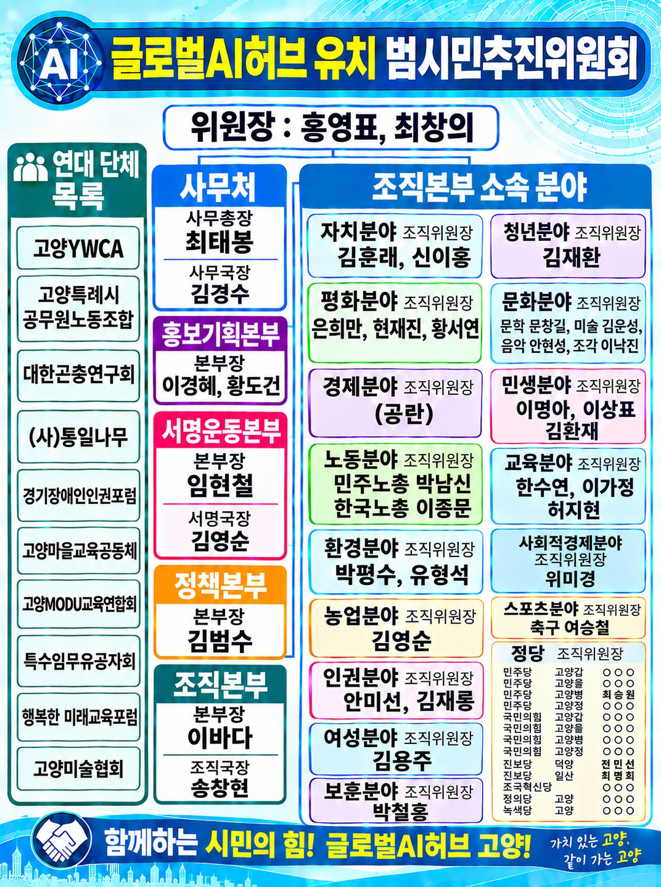

범시민추진위원회 발대식
호수공원 꽃전시관에서 발대식을 개최했습니다.
등록된 주요 게시물이 없습니다.
시민의 힘으로 만들어 가는 변화
킨텍스에서 글로벌 AI 허브 유치 전략과 국제협력 방안을 논의하는 포럼이 개최되었습니다.
고양특례시의회가 글로벌 AI 허브 고양특례시 유치 촉구 결의안을 만장일치로 채택했습니다.
고양특례시 시민사회가 글로벌 AI 허브 유치를 위한 범시민추진위원회를 출범시켰습니다.
경기도 글로벌 AI 허브 유치 고양특례시 범시민추진위원회는 글로벌 AI 허브의 고양특례시 유치를 위해 시민의 뜻과 역량을 모으고, 경기도 및 관계기관과 협력하기 위해 구성된 시민사회 추진조직입니다.
시민 참여와 사회적 공감대 확대
지역사회와 공공·민간 역량의 연계
국제기구의 초기 정착과 운영 지원
시민사회 각 분야의 역량을 모아 글로벌 AI 허브 고양특례시 유치를 추진하고 있습니다.

조직도를 누르면 큰 화면으로 볼 수 있습니다.
글로벌 AI 허브는 국제기구와 정부, 대학, 연구기관, 기업, 시민사회가 협력하여 인공지능을 공공의 이익과 지속가능발전에 활용하는 국제협력 플랫폼을 지향합니다.
킨텍스를 중심으로 한 국제회의·전시 기반
국립암센터 등 의료기관과 교육·연구 자산
장항습지와 다양한 생태환경 실증 기반
수도권 접근성과 다양한 생활·문화 인프라
보건·복지·환경·재난 분야의 현장 실증 가능성
시민 참여를 통한 국제협력 지원 잠재력
경기도 글로벌 AI 허브 유치 고양특례시 범시민추진위원회는 국제기구의 성공적인 정착과 운영, 그리고 고양특례시의 국제특화도시 성장을 목표로 3단계 전략을 추진합니다.
국제기구가 고양특례시에 신속하고 안정적으로 정착할 수 있도록 업무시설, 주거, 교통, 의료, 교육 등 필요한 환경을 조성하고 지원합니다.
고양특례시와 경기도의 공공기관, 대학, 연구기관, 기업, 시민사회 역량을 연계하여 국제기구의 업무 수행과 공공 AI 실증사업을 지원합니다.
국제기구의 설립 목적과 지속가능발전목표(SDGs) 달성에 기여하면서 고양특례시도 국제협력과 공공 AI 분야의 특화도시로 성장하도록 합니다.
초기 안착 · 운영 지원 · 동반 성장
시민의 힘으로 만들어 온 글로벌 AI 허브 유치의 역사
호수공원 꽃전시관에서 발대식을 개최했습니다.
글로벌 AI 허브 유치를 위한 시민 서명운동을 확대했습니다.
글로벌 AI 허브 입지 선정 평가기준 공청회가 개최되었습니다.
유치 전략과 실행조직 구축의 필요성을 제기했습니다.
시의회에서 유치 촉구 결의안이 만장일치로 가결되었습니다.
킨텍스에서 유치전략 포럼이 개최되었습니다.
글로벌 AI 허브 고양특례시 유치를 위한 시민 여러분의 참여를 기다립니다.
시민 서명운동에 참여해 주세요.
온라인 접수 기능 준비 중
위원회 활동에 함께해 주세요.
신청 기능 준비 중
글로벌 AI 허브 유치를 위한 의견을 보내주세요.
접수 기능 준비 중
글로벌 AI 허브 고양특례시 유치와 관련된 정책·연구 정보와 다양한 자료를 제공합니다.